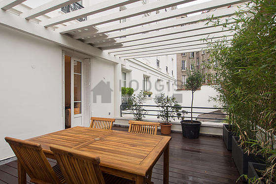
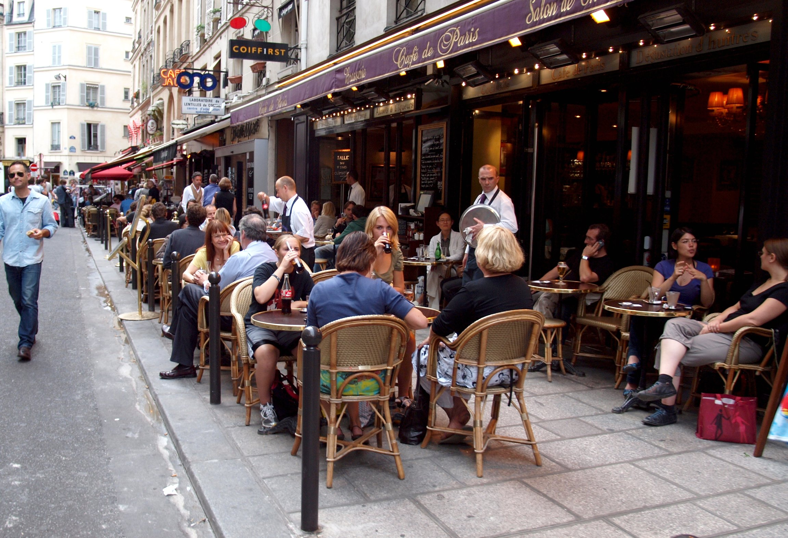
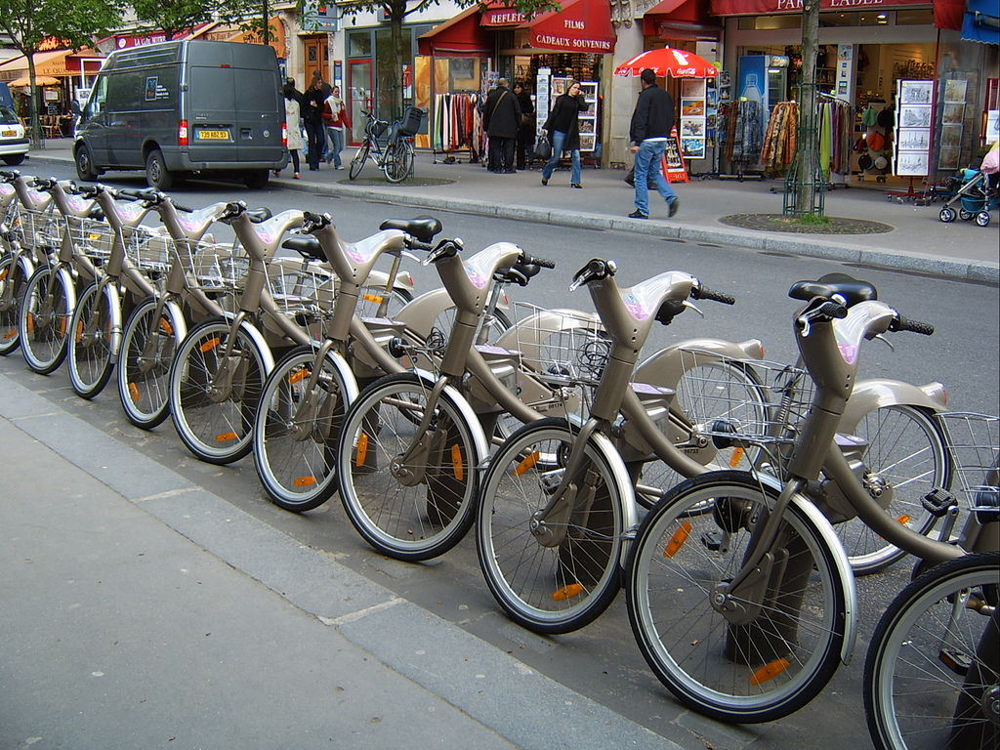
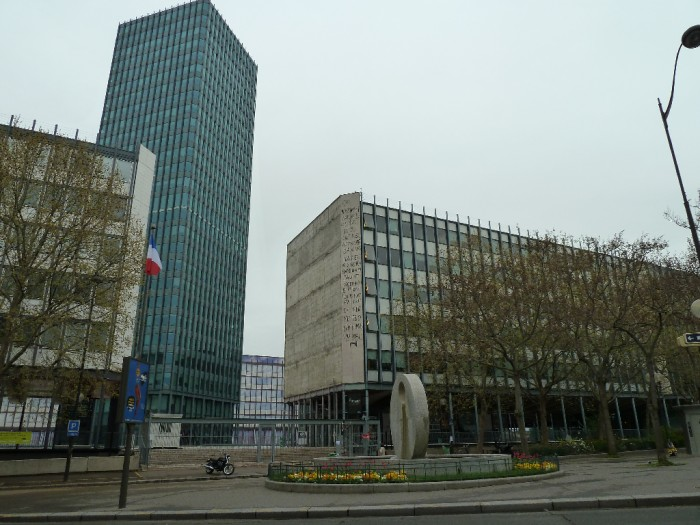
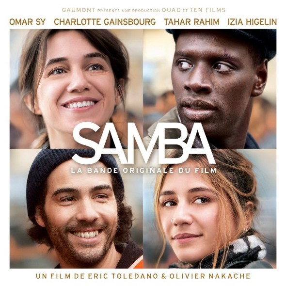
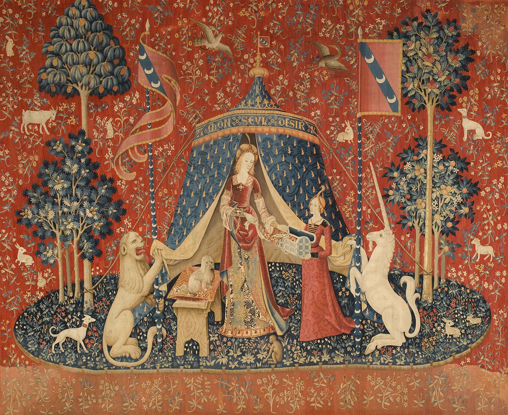
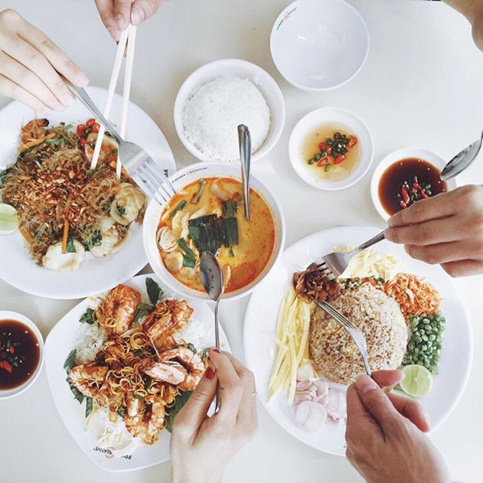
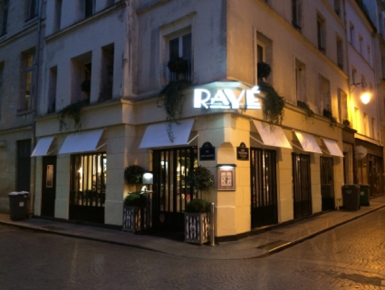

C'est une photo aérienne du 14e arrondissement, où j'habite.
J'aime vivre dans le 14e arrondissement parce que c'est très calme, il y a grands parcs et beaucoup de nature, et il y a un grand marché. J'habite sur Rue Dareau qui se trouve dans un quartier résidentiel très agréable. Aussi, le métro est très proche de mon appartement. Je peux descendre du métro et être en mesure d'aller à n'importe quel arrondissement de Paris.
Pendant le week-end j'aime descendre au parc Montsouris et passer du temps à lire, écouter de la musique, et me relaxer. J'aime aller au marché et acheter de la nourriture pour la semaine. J'achète la meilleure nourriture de tous les vendeurs de la bonne bouffe.
L'appartement où j'habite est très agréable. J'ai un colocataire, mon ami Leo. Notre appartement est 66 mètres carrés, et Leo et moi chaque avons une chambre et nous partageons une agréable salle de séjour. En outre, nous avons une salle de bain, une petite cuisine, et un balcon agréable avec une grande table et trois chaises. J'aime le balcon, et Leo et moi lisons le journal sur le balcon pendant le matin.
À 8h, Leo et moi avons marché au café local pour un café et une pâtisserie. Après que nous avons commandé et nous avons reçu nos cafés et pâtisseries, nous nous asseyons à une petite table à l'extérieur. Nous avons commencé à regarder les gens et parlé de quel type de personne nous avons pensé que les gens étaient.
La première personne qui passait devant nous était une femme qui avait l'air comme si elle était âgée de quarante-cinq ans. Elle portait des chaussures de designer avec un jean et un manteau de designer. Enfin, elle avait un sac à fantaisie. Je dis à Leo, « je pense que la femme doit être une parisienne. » Leo est d'accord et dit qu'il pense qu'elle se tient comme une parisienne. Ensuite, nous avons vu un homme chauve avec une barbe et les vêtements baggy à pied par. Je dis à Leo que l'homme est certainement un paysan.
Avant de quitter le café plus de deux personnes sont passés devant nous. Tout d'abord un homme porte d'un maillot de football jaune, vert, et rouge, d'un jean, et des addidas sambas. Leo dit que l'homme est probablement un immigré, parce qu'il a vu un fois un film qui avait un immigré qui le ressemblait. L'autre est une fille avec un gros sac à dos, un grand café, et qui avait l'air stressé. Leo et moi avons dit qu'elle est étudiante.
Je vais à l'Université Pierre-et-Marie Curie, qui est une membre de Sorbonne Universités. Cette université est dans le cinquième arrondissement, donc pour y aller, j'utilise le vélib. C'est un système de vélos en libre-service, comme Indigo dans Philadelphie.
À Paris, les vélos sont très populaires. Paris est une très vieille ville, donc les rues sont généralement étroites, et il est souvent plus facile de faire un vélo. Les rues ont beaucoup de pistes cyclables, et les conducteurs sont généralement respectueux.
En particulier, j'aime le vélib' parce qu'il est très utile et pratique. Aussi, il n'est pas cher – juste 29 euros par année ! Mes amis qui habitent loin de la fac disent que le métro est assez peu fiable, donc je suis content que je peux utiliser le vélib'.
Ma chose préférée de mon voyage à la fac est l'architecture. Dans le cinquième arrondissement, il y a beaucoup de grands et vieux bâtiments, et ils sont très beaux. Chaque jour, j'essaie de trouver une route différente donc je peux voir les bâtiments différents.
Chaque jour, j'ai un cours à 9h. Aujourd'hui, ce cours est la conception de sites web, qui est un cours d'informatique en option. Je suis étudiant en informatique, donc j'aime que je peux prendre des cours intéressants pendant que je suis en France. Donc, j'aime le cours, mais je n'aime pas que je dois me réveiller si tôt.
C'est une grande différence entre le système éducatif français et le système aux États-Unis. À Penn, mes cours commencent à 11h ou même dans l'après-midi. Ici, cependant, beaucoup de cours commencent vraiment tôt – même avant 9h ! Aussi, il y a beaucoup de cours chaque jour à UPMC, et j'ai souvent environ huit heures de cours par jour ! À Penn, il est normal d'avoir seules trois heures de cours par jour.
Cependant, la plus grande différence ici est les devoirs – ou, plutôt, l'absence de devoirs. Ce cours est à base de projet, donc pour mon projet final, j'ai fait ce site. Mais ça est la seule tâche pour tous mes cours. Pour le reste de mes cours, j'aurai des examens finals.
J'aime que je n'ai pas beaucoup de devoirs, mais je suis un peu stressé pour les examens. J'ai six cours ce semestre, qui seront beaucoup d'examens – à Penn, j'ai souvent environ trois examens finals. Mais, je pense que je préfère le système français parce que, sans des devoirs, j'ai plus de temps libres.
À midi, j'ai mon deuxième cours. Le nom de ce cours est « Le film français ». J'aime vraiment ce cours parce que nous analysons un nouveau film chaque semaine et l'importance de ce genre du film dans la société. Et à la fin de ce cours, nous aurons un projet de réaliser un film d'un genre que nous avons appris dans le semestre et de faire une présentation du film. Jusqu'à maintenant, nous avons vu et analysé cinq films. Les films que je préfère sont Le Fabuleux Destin d'Amélie Poulain et Samba.
Amélie est sorti en 2001 et est réalisé par Jean-Pierre Jeunet. Ce film est à propos d'une femme bizarre qui s'appelle Amélie. Elle est optimiste et elle dédie sa vie d'améliorer les vies de son père, les autres locataires de son appartement, ses amis, et tout le monde en général. Ce film est une comédie romantique.
Samba est sorti en 2014 et est réalisé par Éric Toledano et Olivier Nakache. Ce film parle d'un sans-papiers qui s'appelle Samba. Samba est en danger d'être expulsé de France alors il usurpe différentes identités pour vivre et travailler à Paris. Samba est un drame.
Ces deux films sont très différents en termes des vies des personnages et des difficultés qu'ils doivent affronter. Mais j'aime tous les deux parce qu'ils décrivent Paris dans deux perspectives complètement différentes et alors ils montrent que Paris est extrêmement diverse et est composé de beaucoup de personnes des milieux différents.
Mon cours final du jour est l'histoire d'art. Cette semaine, nous étudions l'art du Moyen Âge, et aujourd'hui, nous allons au Musée de Cluny ! Ce s'appelle aussi le Musée national du Moyen Âge, et il y a beaucoup d'art ancien. Il y a des peintures, des sculptures, et des tapisseries, et elles sont toutes très vielles – du 12e au 16e siècle.
J'adore les tapisseries. Il y a une composition de six tapisseries qui s'appelle La Dame à la licorne, et j'aime beaucoup la tapisserie qui s'appelle « mon seul désir ». Cette tapisserie a seules trois couleurs: bleu, blanc, et rouge.
Pour moi, cette œuvre représente la France et, en particulier, Paris. Au premier plan, il y a deux femmes au centre, et beaucoup d'animaux, comme un singe et un chien, et aussi les animaux fabuleux, comme une licorne. Mais, à l'arrière plan, il y a beaucoup de plantes vraies et d'animaux réels.
Je pense que ces images représentent le luxe et l'extravagance que les gens associent à Paris. Au début, ils voient seulement la beauté de Paris, mais si les gens regardent attentivement, ils verront que Paris est en fait une ville très normale.
À dix-huit heures et demie, je vais à Kapunka Panoramas avec mes amis Jean, Claudette, et Madeleine. Ce resto se trouve à 10 Rue Saint-Marc au Passage des Panoramas dans le deuxième arrondissement. Je pense que prendre dîner avec votre famille est très importante et à mon avis, mes amis sont aussi ma famille alors je prends dîner souvent avec eux.
Kapunka Panoramas est un restaurant thaïlandais. Je choisis ce resto parce qu'il est branché et un des meilleurs restos dans cet arrondissement et aussi parce que la nourriture est très bonne. Le décor de ce restaurant est très chic mais aussi simple. Ils accrochent des lustres au plafond. Les tables sont en bois et leurs surfaces sont très lustres. Les chaises sont aussi en bois. Ils arrangent leurs vaisselles sur chaque table.
Le prix moyen de ce resto est 20 euros alors c'est un peu cher, mais je pense que le prix en vaut la peine. Au resto, je commande de la salade de papaye. Le plat que j'aime mieux est le Pad Thaï poulet et en dessert j'aime la mangue et le riz gluant. Alors si vous voulez aller à Kapunka, je vous recommande d'essayer ces plats.
21h est l'heure où beaucoup de jeunes commencent d'aller aux clubs, aux bars et aux fêtes. À vingt-et-un heures, je vais au Club Rayé. Club Rayé est situé dans le deuxième arrondissement à 26 Rue Dussoubs. Ce lieu est très populaire parmi les jeunes parce que Club Rayé est un bar à cocktails et un bar jazz et piano. Ses cocktails sont très délicieux. Ne vous inquiétez pas ! Club Rayé ne coute pas très cher. Un cocktail là coute vers dix euros.
Beaucoup de célèbres comme Nina Simone, Cole Porter, Miles Davis, Frank Sinatra, Peggy Lee, et Edith Piaf ont chanté ici. Le code vestimentaire est très chic et un peu officiel. Normalement, quand je vais à ce bar, je porte un costume comme beaucoup d'hommes, et les femmes portent des jupes-mini et des chaussures à talons hauts.
Ce bar n'accepte pas les personnes qui n'ont pas l'âge légal, donc seules les personnes de dix-huit ans et plus peuvent y entrer. Il y a un dicton que la meilleure façon de rencontrer et de faire connaissance avec un vrai parisien est d'aller à un bar et je crois que c'est vrai. Pendant ma première semaine à Paris, mon guide m'a montré ce bar et c'était vraiment utile. J'ai rencontré beaucoup de mes amis proches de mon arrondissement et de mon université ici et ces gens sont devenus mon groupe de soutien maintenant.
Quand je pense à Paris, je pense à la beauté, l'immigration, et la culture. Je pense à la beauté parce que Paris est une belle ville qui est très romantique. À Paris, il y a beaucoup de parcs extraordinaires, de belles rues, de cafés supers… La liste est très longue ! Paris est une belle ville avec beaucoup à offrir.
Aussi, je pense à l'immigration parce qu'à Paris, il y a beaucoup d'immigrés, et en particulier les gens qui viennent de beaucoup de pays en Afrique. Beaucoup de gens se déplacent à Paris pour travailler et aider leurs familles. Les immigrés qui habitent à Paris sont une grande partie de ce que je pense que Paris est en fait.
Enfin, je crois que la culture de Paris est une très grande partie de Paris. La culture est très spécifique et différente que les autres. C'est ce qui rend Paris Paris.
Bonne nuit !